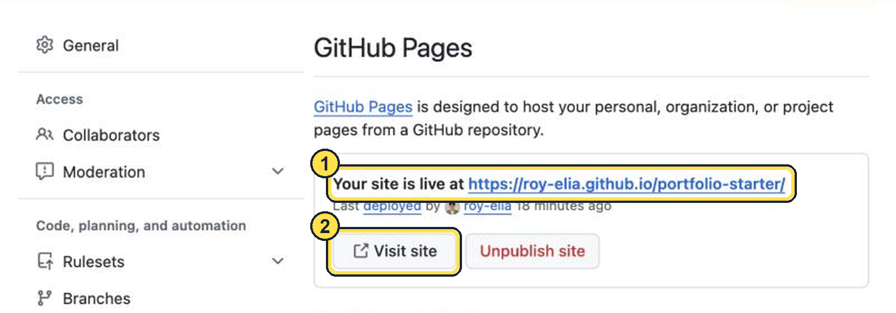

Before you start
- A GitHub account. Sign up at github.com/signup. Your username becomes your web address (
username.github.io), so pick one you'd put on a résumé. - Apply for the GitHub Student Developer Pack tonight. It includes a free domain and GitHub Pro, but approval can take a few days. Go to education.github.com/pack, add your
@mail.mcgill.caaddress, and upload proof of enrolment (a student ID or a Minerva schedule screenshot). - A laptop. A phone works for reading this page, but editing is much easier on a laptop.
The steps
-
Copy the starter site
Open github.com/roy-elia/portfolio-starter and click the green Use this template button, then Create a new repository.

1: Use this template. 2: Create a new repository. -
Name it after yourself
For Repository name, type
your-username.github.iousing your exact GitHub username. That gives you the short addresshttps://your-username.github.io. Keep it Public (free accounts can only publish public repos), then click Create repository.
1: the name, with your own username. 2: Public. 3: Create repository. Any other name works too; your site will just live at username.github.io/that-name/. -
Turn on GitHub Pages
In your new repo, open Settings, then Pages in the left sidebar. Under Build and deployment, set Source to Deploy from a branch, choose
mainand/ (root), and click Save.
1: Pages in the sidebar. 2: Deploy from a branch. 3: mainand/ (root). 4: Save. If you named the repousername.github.io, this may already be on; check anyway. -
Open your live site
Wait about a minute, then refresh the Pages settings. When it says Your site is live at…, click Visit site. That link works for anyone, anywhere. Send it to someone.

1: your address. 2: Visit site. Still a 404? Give it another minute; the first deploy is the slowest. -
Make it yours
In your repo, click
index.html, then the pencil icon (Edit this file) at the top right of the file. Change everything next to a ✏️ comment: your name, intro, links, projects and the Right now list. Colours live at the top ofstyle.css.To save: click Commit changes…, write a short message like add my projects, and confirm. Your live site updates about a minute later.

1: a ✏️ comment and the line it points to. 2: Commit changes…. Want a full editor? Press . on your repo for github.dev, or clone it and use VS Code with git add,git commit,git push. -
Add your photo
Open the
assetsfolder in your repo and use Add file → Upload files. Name itme.jpg, then inindex.htmlchangeassets/me.svgtoassets/me.jpg. Commit.

That's it: you have a real website. Raise your hand if anything got stuck, and sign up for the demo showcase at 8:30 if you want to show it off.
Get yourname.com (or .me, or .tech)
With the Student Developer Pack you can claim a domain free for a year. Current offers on the pack page:
- Namecheap: a free
.medomain for one year. - .TECH: one
.techdomain free for one year. - Name.com: a free domain from 25+ endings like
.liveand.studio.
Then point it at your site:
- In your repo: Settings → Pages → Custom domain, type your domain, and click Save. Do this before touching DNS.
- At your registrar, add four A records for the bare domain:
185.199.108.153 185.199.109.153 185.199.110.153 185.199.111.153 - Add a CNAME record for
wwwpointing toyour-username.github.io. - Back in Pages settings, tick Enforce HTTPS once it's available. DNS changes can take up to 24 hours.
Full details: GitHub's custom domain docs.
Want a framework instead?
Plain HTML is a great first site. If you want more, here's when each option makes sense:
- Plain HTML/CSS
- One page, first site, nothing to install. What you just used.
- Astro
- The best default for portfolios and blogs. Write pages in Markdown, ships almost no JavaScript.
- Next.js
- If you want React plus a backend (forms, logins, APIs). Overkill for a static portfolio.
- React + Vite
- An interactive single-page site when you already know React.
Templates worth forking
- devportfolio Astro simple one-page developer CV
- AstroPaper Astro minimal, accessible blog
- Astro Cactus Astro + Tailwind blog and portfolio
- Academic Pages Jekyll fork, rename, live on Pages
- al-folio Jekyll research sites with publications
- PaperMod Hugo fast, clean blog theme
All MIT licensed. Fork it, change the content, keep the license file.
Other free places to host
- GitHub Pages
- Free with a public repo. Up to 1 GB per site. Personal, non-commercial sites.
- Vercel
- Free Hobby plan for personal projects. Import a GitHub repo and every push deploys, with a preview link for each branch. Best for Next.js.
- Netlify
- Free plan with monthly credits (roughly 20 production deploys a month). Drag-and-drop a folder to deploy.
Level up later
- A blog in Markdown: move to Astro and use content collections.
- Dark mode: already in your starter. Look for
prefers-color-schemeinstyle.css. - See who visits: GoatCounter is free and cookie-free. Paste one script tag.
- Notion as your CMS: write in Notion and pull pages in at build time with the Notion API and notion-to-md.
Stuck after tonight?
Ask in the CSUS Discord, drop by the CSUS Helpdesk in Trottier 3090 (weekdays 11–5 during term), or find us on Instagram at @mcgillcsus.